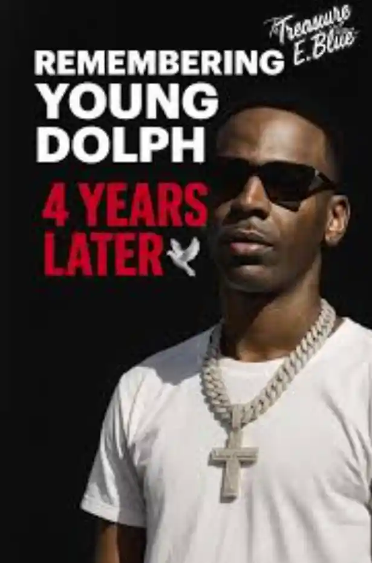

Featured Post
Paper Route Legacy Lives On
March 2026
Young Dolph built more than a music career. He built a message. His work stood for confidence, ownership, independence, and staying true to yourself no matter who was watching. That message still connects with people because it feels real. His music was never just about flexing. It was also about self-belief, hustle, loyalty, and building something on your own terms. That is why his legacy still feels powerful. Fans continue to celebrate his sound, his business mindset, and the fearless energy he brought into every era of his career.